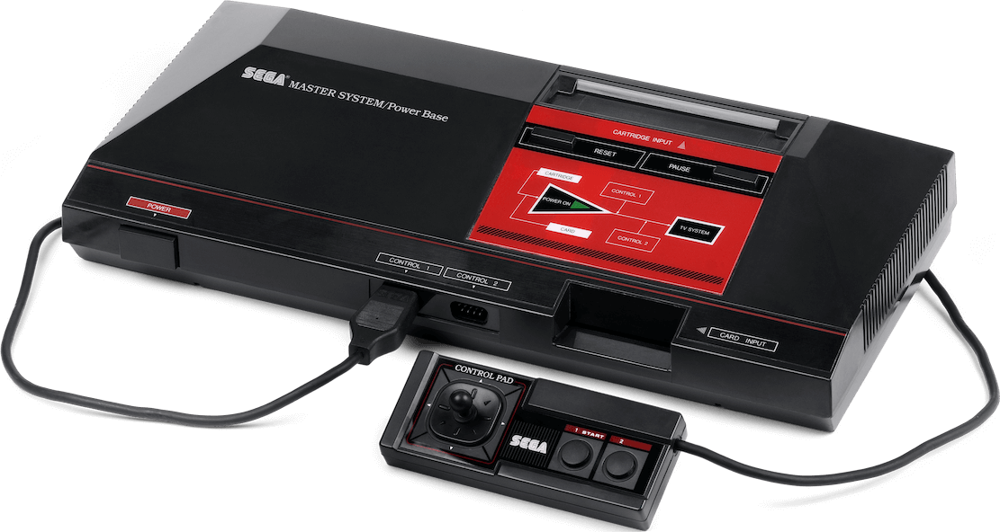
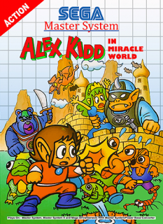
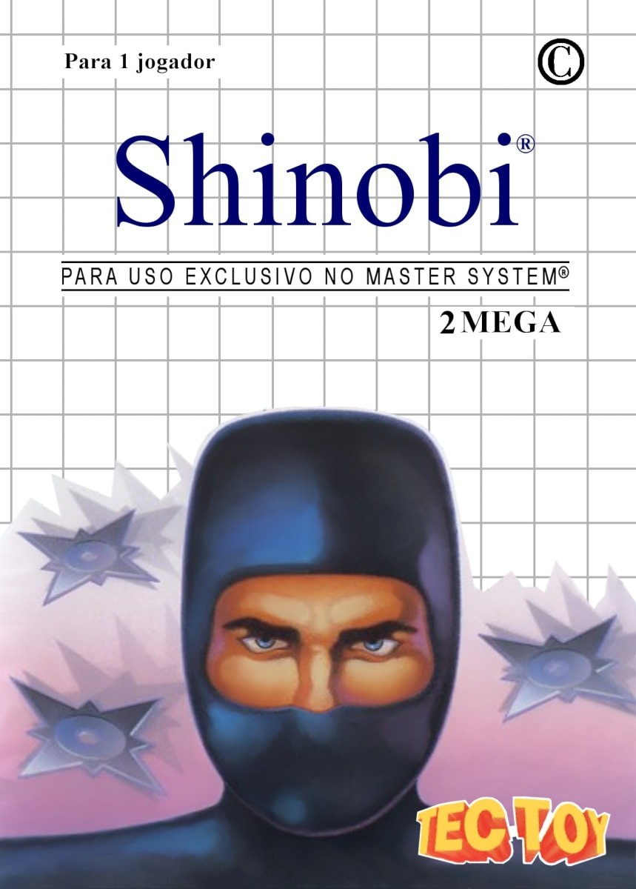

A Jornada dos Consoles: Master Era

O Master System, um console de videogame de 8 bits produzido pela Sega, tem uma história fascinante. Vamos explorar suas origens, jogos notáveis e seu impacto em diferentes partes do mundo:
Origens e Desafios Iniciais:
- Lançado inicialmente no Japão em 1986 com o nome Sega Mark III, o Master System enfrentou dificuldades devido à forte concorrência do NES (Nintendo Entertainment System) da Nintendo.
- A Nintendo tinha contratos de exclusividade com produtoras de jogos, o que limitava os lançamentos para o Master System.
- Apesar do baixo sucesso no Japão, a Sega decidiu lançar o Master System em outros países.
Estratégias Globais:
- Nos Estados Unidos, a Nintendo dominava o mercado, e a Sega vendeu os direitos de comercialização do Master System para a Tonka. No entanto, a Tonka não conseguiu promover o console eficientemente.
- Em 1990, após o lançamento do Sega Genesis, a Sega recuperou os direitos de comercialização nos EUA e lançou o Master System II, um modelo mais barato.
- Na Europa, o Master System foi bem aceito e se tornou popular. Desenvolvedores europeus criaram jogos para o console, e a Sega Europeia ofereceu suporte até 1996.
- O sucesso também se repetiu na Austrália, onde o mercado seguia o padrão europeu.
Brasil: O Fenômeno Tec Toy:
- No Brasil, o Master System se tornou um fenômeno de vendas e cultura, graças à Tec Toy.
- A Tec Toy adaptou o console para o mercado brasileiro, lançando-o em 1989.
- O Master System ganhou popularidade no Brasil e conquistou muitos fãs.
Jogos Notáveis:
- Alex Kidd in Miracle World: Um jogo de plataforma icônico em que o protagonista, Alex Kidd, enfrenta desafios, derrota chefes e salva seu irmão.

- Shinobi: Uma série clássica de ação que nasceu no Master System. Nesse jogo, você controla o ninja Joe Musashi, que precisa impedir que a organização terrorista Zeed sequestre os estudantes do clã dele.

- Mônica no Castelo do Dragão é um clássico jogo lançado para o Master System no Brasil em 1991 pela TecToy, em parceria com Maurício de Souza Produções e autorizado pela Sega.